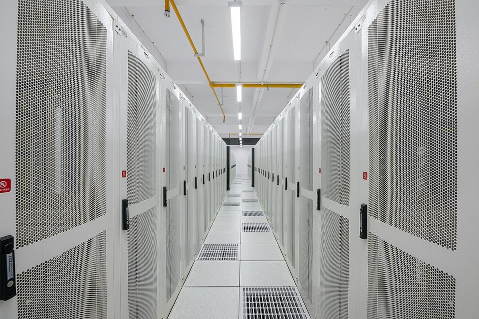
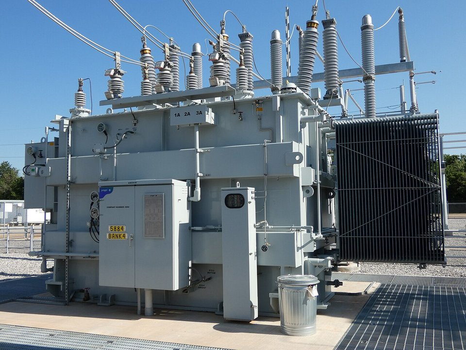
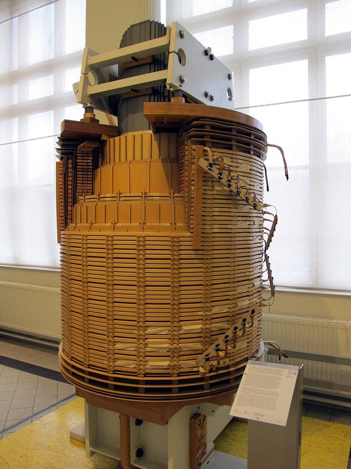

DOWNSTREAM DEMAND · AI · 2026.10
AI 吃電也吃鋼：鋼鐵業的新需求與新工具
鋼鐵潮流工作室 · 發布 2026.10.04

本期重點
AI 和鋼鐵業的關係是雙向的：一方面，AI 資料中心吃電，帶動電網、變壓器、建築與冷卻設備的高階鋼材需求；另一方面，鋼廠也用 AI 改造煉鐵、品管與巡檢。對鋼鐵業來說，AI 帶來的是高附加價值的利基需求，量不大但利潤高，撐不起整體鋼市的總量，卻會改寫鋼廠的獲利結構。
- 最大瓶頸在變壓器。 美國大型變壓器交期最長 4 年、五年漲價約 80%，方向性電磁鋼片供應不足是主因之一。
- 台灣政策加持。 行政院「AI 新十大建設」2025–2028 年投入約 1,900 億元，帶動機房、電網與公共工程用鋼。
- 從拚量到拚值。 中鋼精緻鋼品銷量僅約 11.5%，獲利貢獻卻達九成，AI 相關鋼品是延伸方向。
- 鋼廠也在用 AI。 高爐爐況預測、鋼捲表面瑕疵檢測、預知保養，以及中鋼「牽狗放鷹」巡檢機器人。
AI 帶動哪些鋼材需求
電網與變壓器方向性電磁鋼片最大瓶頸：美國大型變壓器交期最長 4 年
資料中心建築結構鋼、耐震鋼構機房、變電站與廠房鋼構
冷卻系統不鏽鋼液冷模組、管路與熱交換器
馬達與機電無方向性電磁鋼片冷卻風扇、泵浦用高效率馬達
再生能源與儲能厚板、鍍鋅鋼離岸風電基礎、太陽能支架、儲能櫃
伺服器機櫃冷軋、鍍鋅鋼板機櫃、機殼與高架地板
資料中心本體用鋼量有限，真正放大鋼材需求的是「電」：AI 運算的用電要靠新電廠、新電網、新變電站支撐，每一段都是鋼材密集的基礎建設。
最大瓶頸：變壓器與方向性電磁鋼片

根據 pv magazine USA 2026 年 5 月的報導，美國變壓器市場已陷入嚴重缺貨：
| 指標 | 數據 |
|---|---|
| 大型電力變壓器交期 | 最長約 4 年 |
| 發電升壓變壓器需求（2019→2025） | +274% |
| 變電站變壓器需求（2019→2025） | +116% |
| 變壓器價格（五年） | 約 +80% |
| 新增產能 | Hitachi Energy 投資逾 10 億美元（含 2028 年啟用的維吉尼亞州新廠）、Siemens 4.21 億美元北卡新廠 |
缺貨原因除了需求暴增，報導也點名方向性電磁鋼片與銅的供應受限。美國本土的方向性電磁鋼片幾乎只有 Cleveland-Cliffs 生產，高度仰賴進口。

方向性與無方向性：兩種電磁鋼片
| 方向性（GO） | 無方向性（NO） | |
|---|---|---|
| 晶粒 | 晶粒沿軋延方向排列（高斯織構） | 晶粒方位隨機 |
| 磁性 | 軋延方向導磁極佳、鐵損極低 | 各方向磁性相近 |
| 用途 | 變壓器鐵芯（磁場方向固定） | 馬達、發電機（磁場旋轉） |
| AI 相關需求 | 電網、變電站、資料中心供電 | 冷卻風扇、泵浦、機器人與無人機馬達 |
| 生產門檻 | 需二次再結晶、高溫長時間退火，全球少數鋼廠能量產 | 門檻較低，但極薄、高磁通等頂規產品仍屬高階 |
就公開資料來看，中鋼電磁鋼片的主力是無方向性，近年推進到 0.1 mm 頂規薄片。AI 電網這波最缺的方向性鋼片，台灣目前較難直接受惠，但資料中心冷卻與機器人、無人機用的高效率馬達，則是中鋼的主場。
鋼廠內部：用 AI 煉鋼
- 煉鐵：預測高爐爐況、優化風口與配料，讓爐況更穩、焦比更低。
- 品質檢測：影像 AI 即時檢出鋼捲表面瑕疵，取代人工目視。
- 預知保養：從振動、溫度數據預判軋機與風機故障時間，減少非計畫停機。
- 巡檢機器人：中鋼以「牽狗放鷹」派機器狗巡檢高溫與有毒氣體區、無人機巡料場；POSCO 也引進 Boston Dynamics 的 Spot 機器狗，其光陽廠 2019 年獲世界經濟論壇評為「燈塔工廠」。
- 排程與能源調度：優化生產排程與用電時段，降低能源成本。
較少人談的負面連動
- 電價與供電。 AI 資料中心搶電、推高電價，電爐鋼廠成本直接受影響；台灣夏季尖峰供電限制也會更明顯。
- 人才與資本。 半導體與 AI 產業吸走工程人才與資金，傳統鋼廠招募與投資排序更難。
- 量的支撐有限。 中國營建需求下滑對鋼市總量的影響，遠大於 AI 帶來的增量。
台灣鋼廠的 AI 布局
| 公司 | 布局方向 |
|---|---|
| 中鋼（2002） | 高效率電磁鋼片（低鐵損、高磁通）供應 AI 伺服器冷卻、無人機、機器人；0.1 mm 頂規薄片；精緻鋼品銷量約 11.5%、獲利貢獻約九成 |
| 中鋼構（2013） | AI 設施高強度耐震鋼構，訂單排到 2027 年 |
| 新光鋼（2031） | 能源基建、太陽能支架與物流倉儲用鋼，承接 AI 新十大建設與前瞻基建 |
| 燁輝 | 聚焦 AI 基建利基市場的鍍面鋼品 |
| 榮剛 | 不鏽鋼材料打入 AI 伺服器液冷模組供應鏈 |
對台灣鋼鐵業的觀察
- AI 是「值」的故事，不是「量」的故事。 能吃到 AI 紅利的是電磁鋼片、耐震鋼構、特殊不鏽鋼等高階品項，一般碳鋼仍受大環境牽動。
- 方向性電磁鋼片是缺口也是機會。 全球變壓器缺貨短期難解，但方向性鋼片的技術與設備門檻極高，投資回收期長，須審慎評估。
- 電力是雙面刃。 台灣 AI 用電成長若推高工業電價，對電爐業者與高耗能製程的成本壓力不容忽視。
- 智慧製造是降本關鍵。 在需求疲弱、碳成本上升的環境下，AI 改善良率、能耗與安全，是鋼廠維持競爭力的務實工具。
觀察重點
- 美國與全球變壓器交期是否縮短，方向性電磁鋼片新增產能何時到位。
- 行政院 AI 新十大建設的發包進度與鋼材用量。
- 中鋼高階電磁鋼片的出貨量與在精緻鋼品中的占比。
- 台灣工業電價調整與夏季供電狀況。
資料來源
- U.S. transformer market faces severe supply constraints as lead times extend to four years（pv magazine USA，2026-05-11）
- The AI Power Bottleneck: Data Centers Meet the Steel Monopoly（Adafruit，2026-04-22）
- AI 基建、新能源 扮鋼市成長引擎（經濟日報，2026-07-27）
- 鋼鐵業者瞄準 AI 基建商機（經濟日報，2026-05-26）
- 中鋼等鋼廠迎利多！行政院千億資金造AI新十大建設（工商時報，2026-03-25）
- 中鋼導入 AI 打造護國神鋼「牽狗放鷹」（經濟日報，2026-08-10）
- POSCO the Lighthouse Factory（POSCO Newsroom）
- Robotics, AI & Steel: Boston Dynamics' Spot at POSCO（Steel Industry News）
內容僅供產業資訊參考，不構成投資建議。新聞版權屬原出處所有。